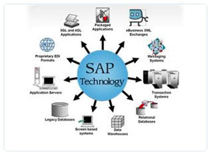

Over 100,000 companies worldwide run SAP solutions and take advantage of SAP services. In a diversified IT landscape, getting the most from an SAP-based system requires seamless integration and a smooth deployment into your existing business environment, requiring deep technical expertise and extensive experience in the implementation and configuration of SAP systems and modules. Run better with XENOMI Software Technologies Software advantage.
With well over 1 million hours of SAP development experience, our engineers and consultants combine traditional SAP qualifications with our unique, proven approach to implementing advanced SAP solutions. XENOMI Software Technologies Software professionals have been involved in the development of many products directly for SAP, touching a number of core and emerging products. This close tie to SAP’s product organization, provides unique insights into the newest technologies and product strategies – insights that XENOMI Software Technologies Software Solutions can leverage to cut implementation and development costs, keep you ahead of the competition, and help you capture a higher return on your SAP investment.
XENOMI Software Technologies Software Solutions has unique expertise in advanced SAP technology engineering and offers services in all of these SAP-based product areas:
Custom UI and functionality
XENOMI Software Technologies has extensive experience in methodology and configuration of all major SAP functional modules. We offer a full range of related consulting services:
SAP ERP Financials – these modular applications can be tailored to your specific needs in core accounting and reporting capabilities, financial supply chain management, treasury, and shared services
SAP ERP Human Capital Management – this solution can help your executives, human resources (HR) professionals, and line-of-business (LOB) leaders forecast, plan, and hire best talent
SAP ERP Corporate Services – this solution can help you more effectively manage real estate, enterprise assets, project portfolios, corporate travel, environment, health, and safety compliance, quality, and global trade service.
SAP CRM (Customer Relationship Management)
XENOMI Software Technologies can help you implement a range of SAP CRM solutions to help you gain the essential business insights needed to make better decisions, sharpen your focus on customers to drive demand and retention, and better manage your marketing resources.